Nature
Charleroi surprend par son harmonie entre nature et patrimoine industriel. Les terrils, vestiges de l'époque minière, invitent à l'aventure verdoyante avec des panoramas époustouflants en leur sommet. Parfait pour une journée riche en découvertes et activités !
Le Bois du Cazier
Le Bois du Cazier célèbre le patrimoine industriel de Charleroi au sein d'une oasis
verdoyante.
Avec ses musées dédiés au charbon, à l'acier et au verre, cet espace UNESCO
éduque et émeut, commémorant la tragédie de 1956 tout en valorisant les métiers anciens par
des démonstrations vivantes d'artisanat.
Ses terrils offrent une promenade unique entre
nature et histoire.
Horaires musée :
| Lundi | Fermé |
| Mardi | 09:00 - 17:00 |
| Mercredi | 09:00 - 17:00 |
| Jeudi | 09:00 - 17:00 |
| Vendredi | 09:00 - 17:00 |
| Samedi | 10:00 - 18:00 |
| Dimanche | 10:00 - 18:00 |
-
Infos :
- Fourchette de prix : €€€€€
- Site web : leboisducazier.be
- Télephone : (0)71.88.08.56
La Boucle Noire
Une randonnée immersive de 23 km. Marchez le long de la Sambre, gravissez des terrils et
admirez des châteaux historiques tout en plongeant dans l'héritage industriel charbonnier du
XIXe et XXe siècle. Conçue par un duo d'aventuriers urbains, cette balade punk poétique vous
offre une expérience authentique entre nature reconquise et vestiges sidérurgiques
émouvants.
Les cartes sont disponibles à la Maison du Tourisme ou à l'Eden pour ce périple
singulier où passé et présent se rencontrent.
Horaires :
Constamment ouvert au public
-
Infos :
- Fourchette de prix : €€€€€
- Site web : cm-tourisme.be
Le site du Martinet
Ancrage historique et réserve de biodiversité, le site du Martinet à Charleroi s'impose
comme une destination incontournable.
Traversez des espaces naturels reconquis avec le GR412, admirez la vue sur la vallée de la
Sambre et ressentez l'histoire ouvrière belge en déambulant parmi les vestiges
architecturaux restaurés.
Récemment de nouvelles activités s'installent sur le site (embouteillage de bière,
boulangerie, valorisation énergétique et vignoble pédagogique).
Horaires :
Constamment ouvert au public
-
Infos :
- Fourchette de prix : €€€€€
- Site web : destinationterrils.eu